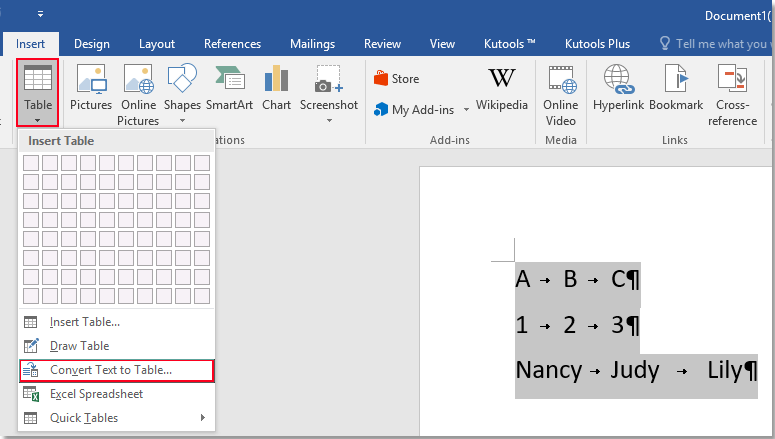

Bine ați venit într-un loc unde puteți învăța funcționalitățile de bază din Microsoft Word!
- Click pe tab-ul „Insert” (Inserare).
- Alege „Table” (Tabel).
- Selectează dimensiunile (ex: 3x3) din grilă..
- Tabelul va apărea în document și îl poți edita.
Tabelele sunt utile pentru a organiza informația în rânduri și coloane. Word îți permite să inserezi rapid tabele simple sau complexe, cu opțiuni de design precum culori, stiluri de borduri, sau combinarea celulelor. Poți chiar și sorta conținutul dintr-un tabel.
